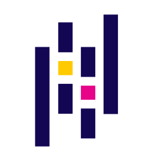
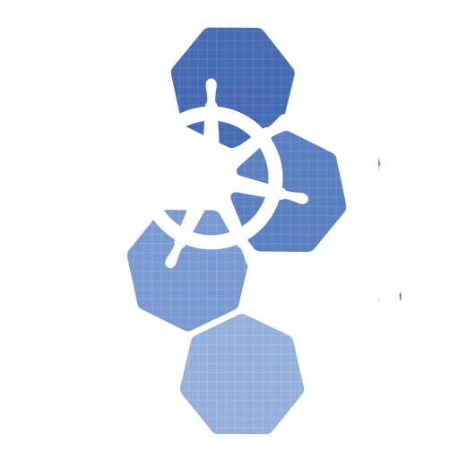
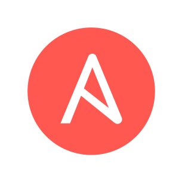
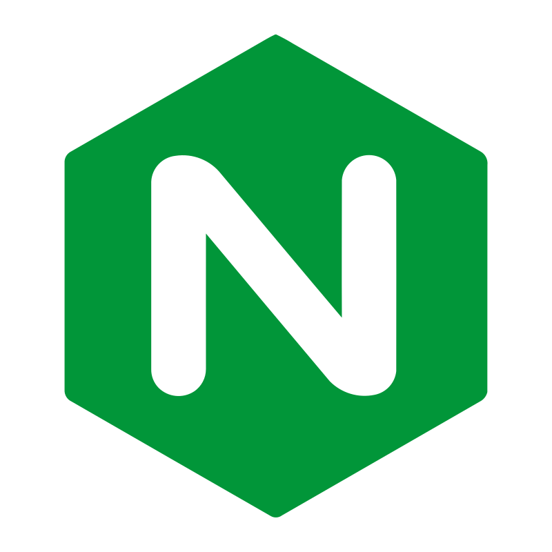
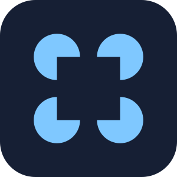
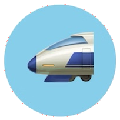
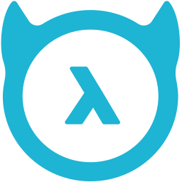
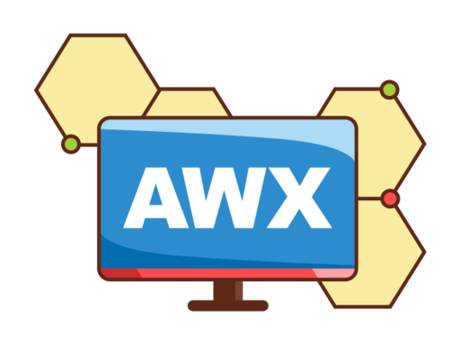
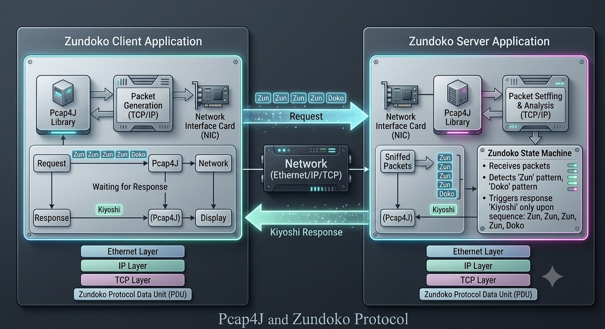
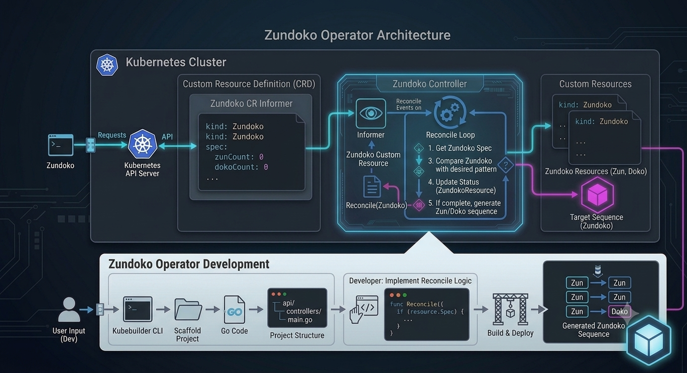

第一章 2008 – 2012
JP1/Network Node Manager i の開発
HPEからの導入品。ルーター・スイッチなどネットワーク機器の構成管理・障害検知・障害分析ツール。
 C
C Bash
Bash- Perl
 Java
Java Maven
Maven- RHEL
- Solaris
- HP-UX
 Windows Server
Windows Server- ESXi
- Cisco
Software Architect & Site Reliability Engineer
KAITO YAMADA
日立製作所 シニアソフトウェアアーキテクト
JP1 Cloud Service / Operations Integration — アーキテクト 兼 SREリード
Profile
Journey
1983.12
2002
3畳一間・風呂無し・空調無し・換気扇無し・トイレ共同のアパートで一人暮らし。クラシックギター部に所属し、マルチコアプロセッサアーキテクチャを研究（日立製作所 中央研究所・ルネサスと共同研究）。
2008
横浜市泉区の寮に入居。エンジニア人生のはじまり。
2011
武蔵小杉あたりに引っ越し。
2012
HPE社に常駐。ロッキー山脈のふもとで5年。子供が二人生まれる。
2017
戸塚の社宅に移住。
2023
現在に至る。
Career
第一章 2008 – 2012
HPEからの導入品。ルーター・スイッチなどネットワーク機器の構成管理・障害検知・障害分析ツール。
CBashJavaMavenWindows Server第二章 2012 – 2017
コロラドの開発チームに常駐。帰任後の2017年には ServiceNow の JP1連携テンプレートも開発。
Java JavaScript
JavaScript Docker
Docker Git
Git Selenium
Selenium ServiceNow
ServiceNow第三章 2018 – 2021
AIによるIT運用を支援するツール。フルスタック＋クラウドネイティブに技術領域を拡大。
 Python
Python Flask
Flask
Pandas scikit-learn
scikit-learn TypeScript
TypeScript React
React Redux
Redux Webpack
Webpack Jest
Jest Material UI
Material UI Go
Go GinJava
GinJava Kubernetes
Kubernetes Helm
Helm
KubebuilderDocker Alpine Linux
Alpine Linux Swagger
Swagger
Ansible Elasticsearch
Elasticsearch Kibana
Kibana
nginx PostgreSQL
PostgreSQL RabbitMQ
RabbitMQ GitLab
GitLab第四章 2022 – 現在
ITSMと運用自動化の機能を備えた、運用のコード化 （Operations as Code） が特徴のクラウドサービス。アーキテクト兼SREリードとして牽引中。
 AWS
AWS Amazon BedrockGoJavaScriptReactReduxJestMaterial UITypeScript
Amazon BedrockGoJavaScriptReactReduxJestMaterial UITypeScript Next.js
Next.js HugoPython
HugoPython FastAPI
FastAPI
LangGraph
LiteLLM JenkinsPostgreSQL
JenkinsPostgreSQL MongoDB
MongoDB RedisRabbitMQ
RedisRabbitMQ Vault
Vault GrafanaGitLab
GrafanaGitLab
Hasura
AWX OpenTelemetry
OpenTelemetryZundoko Kiyoshi
私を語る上で外せない、伝説のミーム。すべてはこのツイートから始まった。
Javaの講義、試験が「自作関数を作り記述しなさい」って問題だったから
— てくも (@kumiromilk) 2016年3月9日
「ズン」「ドコ」のいずれかをランダムで出力し続けて「ズン」「ズン」「ズン」「ズン」「ドコ」の配列が出たら「キ・ヨ・シ！」って出力した後終了って関数作ったら満点で単位貰ってた

2016
ZUNDOKOプロトコルを実装してみた。L2レイヤーでズンドコするという狂気。

2019
KubebuilderでKubernetes Operatorを作ってみた。ZundokoリソースをReconcileする。
$ ./zundoko.sh
「ズン」「ズン」「ズン」「ズン」「ドコ」が出るまで止まりません。